In labs, Acetaminophen is formed by first heating together a mixture of p-aminophenol, water, and acetic anhydride in an aluminum block or sand bath until the solids have dissolved. The mixture is then placed in a small beaker to cool to room temperature and stirred with a glass-rod to initialize crystallization. The crystals are then scraped out and placed on a clay or glass plate to allow them to air-dry. Sodium dithionite (sodium hydrosulfite) is mixed in water and heated at 100 Celcius , and placed in an ice bath to cool. The purified Acetaminophen is crystalized in a solvent mixture composed of 50% water and 50% methanol. When the mixture has cooled to room temperature, it is placed in an ice-water bath for several minutes. The crystals are then collected on a watch glass or piece of smooth paper and set aside to let them air-dry.
For mass production, p-Nitrophenol is reduced and the resulting p-aminophenol is acetylated by means of heating with a mixture of acetic anhydride and glacial acetic acid. The crude product may be purified by recrystallization from an ethanol-water mixture.

Acetic Anhydride - Substance widely used as a reagent in organic synthesis
Crystallization - Transition from liquid, solution, or gas to crystal
Sodium dithionite (sodium hydrosulfite) - White crystalline powder with weak sulfurous odor, stable in absence of air.
Acetic Acid - Vinegar
Recrystallization - Technique used to purify chemicals